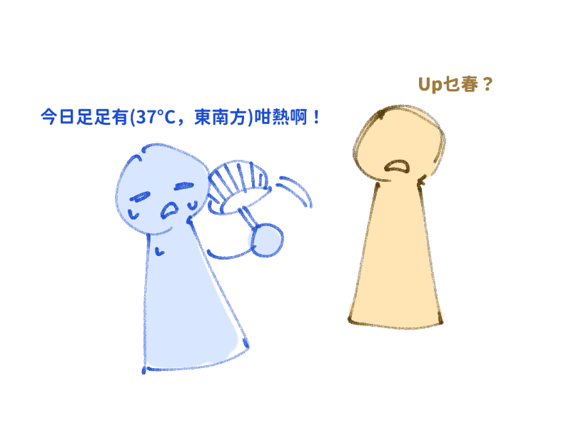
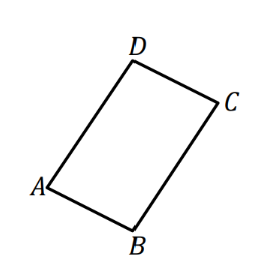
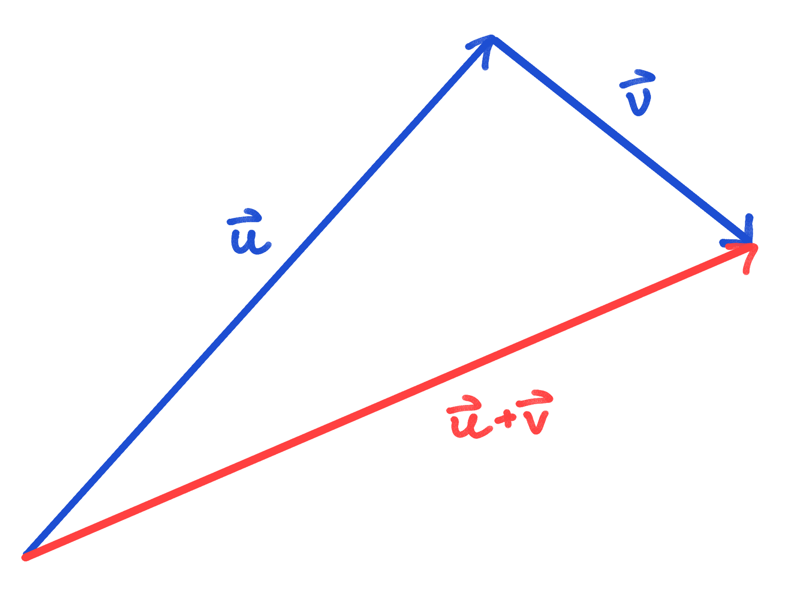
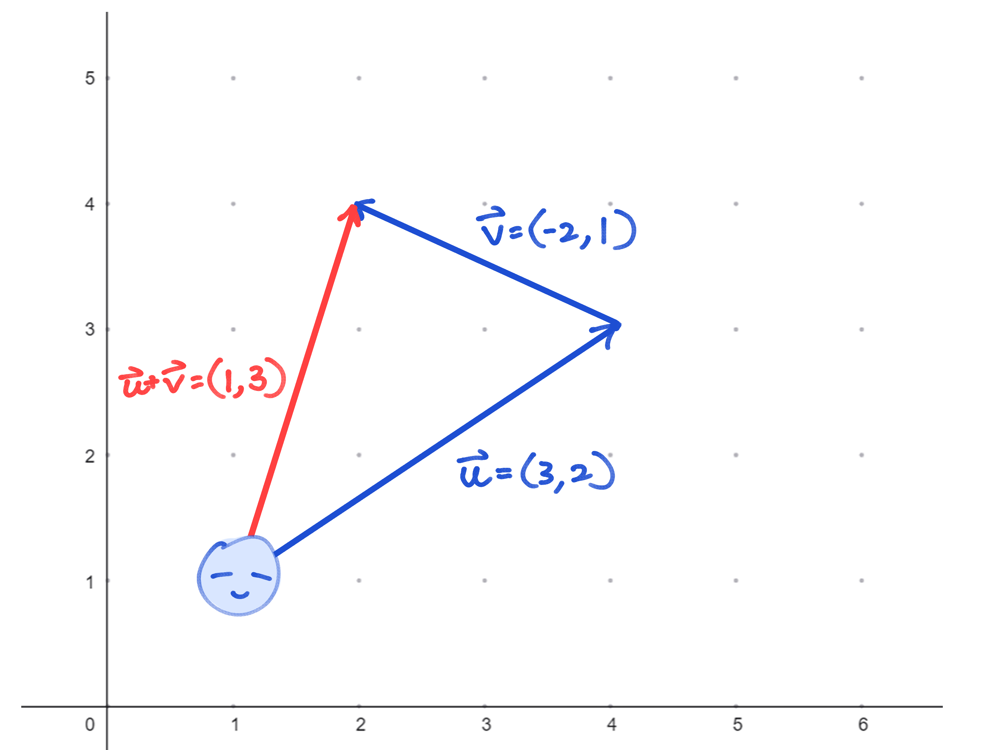

平時一啲冇方向性嘅數字，例如「長度 Length」，「速率 Speed」，「溫度 Temperature」，我哋稱呼為純量（Scalar）。
而顧名思義，向量（Vector）就係有「方向」嘅「數量」。例如「位移 Displacement」，「速度 Velocity」，「力 Force」，我哋係可以講埋個方向嘅。

A scalar is a quantity with only magnitude.
A vector is a quantity with both magnitude and direction.
喺平面或者空間入面，我哋通常用一條箭咀嚟代表一個向量，箭咀嘅長短表示向量嘅大小（Magnitude），箭咀嘅指向就係佢嘅方向（Direction）。
Let $n$ be a positive integer. A vector is an $n$-tuple $(v_1, v_2, \ldots, v_n)$ of real numbers.
The entries of the vector are called the coordinates of ${\bf v}$. The entry $v_j$ is called the $v_j$ - coordinate of ${\bf v}$. We can also write it as an column matrix. More specifically, this is called a column vector: $$ {\bf v} = \begin{pmatrix} v_1 \\ v_2 \\ \vdots \\ v_n \end{pmatrix} $$In DSE syllabus, we will only learn vectors up to 3D case. i.e.
$$ {\bf v} = (x,y) = x{\bf i} + y{\bf j} $$or
$$ {\bf v} = (x,y,z) = x{\bf i} + y{\bf j} + z{\bf k} $$${\bf i}, {\bf j}, {\bf k}$ are called standard unit vectors, in which we will discuss them later.
(DSE only uses the notation $ {\bf v} = x{\bf i} + y{\bf j} + z{\bf k} $.)
一個好直觀嘅解讀法，${\bf v} = (x,y,z) = x{\bf i} + y{\bf j} + z{\bf k}$ 代表向 $x$-axis 嗰個方向行咗 $x$ 個單位，$y$-axis 嗰個方向行咗 $y$ 個單位，$z$-axis 嗰個方向行咗 $z$ 個單位。
冇錯！我哋嘅老友坐標 coordinate"s"，其實都係一種 vector！（所以先有s）
$$ P = (1,2,3) \implies \overrightarrow{OP} = {\bf i} + 2{\bf j} + 3{\bf k} $$「從 $O$ 出發，$x$ 方向行 $1$ 格，$y$ 方向行 $2$ 格，$z$ 方向行 $3$ 格到 $P$。」
Two vectors are equal if and only if they have the same magnitude and the same direction.
Equivalently, two vectors ${\bf u} = (u_1, u_2, u_3)$ and ${\bf v} = (v_1, v_2, v_3)$ are equal if and only if $u_1 = v_1$, $u_2 = v_2$, and $u_3 = v_3$.留意返嘅係，即使兩支 vector 嘅位置 position 唔一樣，只要長度同方向一樣，我哋就會話呢兩支 vector 相等。換句話講，我哋係唔考慮位置的。
In the parallelogram $ABCD$, we have $\overrightarrow{AB} = \overrightarrow{DC}$ and $\overrightarrow{AD} = \overrightarrow{BC}$. However, $\overrightarrow{AD} \neq \overrightarrow{CB}$ (Their directions are different).

The negative vector of ${\bf v}$ is denoted as $-{\bf v}$. It has the same magnitude as ${\bf v}$ but the opposite direction.
For any points $A$ and $B$, we have $\overrightarrow{AB}=-\overrightarrow{BA}$ and $\overrightarrow{|AB|}=\overrightarrow{|BA|}$.
講咩呢？如果 $\overrightarrow{AB}$ 係從屋企去學校，咁 $-\overrightarrow{AB}$ 就係從學校返屋企啦！
In the parallelogram $ABCD$, we have $\overrightarrow{AD} = -\overrightarrow{DA} =-\overrightarrow{CB}$.
The zero vector is denoted as ${\bf 0}$. Its magnitude is zero and it has no specific direction (or its direction is arbitrary).
A unit vector (or direction vector) is a vector with magnitude equal to $1$. For any non-zero vector ${\bf v}$, we denote the unit vector of ${\bf v}$ as $\hat{\bf v}$, and use the below formula to find $\hat{\bf v}$:
$$ \hat{\bf v} = \frac{{\bf v}}{|{\bf v}|} $$Unit vector 嘅作用就係捨棄長度信息，只留低方向信息。
咁樣我哋就可以好方便咁表示方向啦。例如 $2\hat{\bf v}$ ，就代表我向 ${\bf v}$ 嘅方向行 $2$ 個 unit 。我唔需要考慮原本 ${\bf v}$幾長，我只需要沿著嗰個方向行！
（呢 part 大部分講嘅野都非常非常之簡單，你甚至可能覺得有啲弱智...）
The magnitude (or length) of a vector \(\mathbf{v} = (x, y, z)\) is denoted by \(|\mathbf{v}|\) and is given by:
$$ |\mathbf{v}| = \sqrt{x^2 + y^2 + z^2} $$In 2D, for \(\mathbf{v} = (x, y)\):
$$ |\mathbf{v}| = \sqrt{x^2 + y^2} $$The magnitude is always a non-negative scalar.
呢條公式點嚟呢？冇錯！就係畢氏定理！
For two vectors ${\bf u} = (u_1, u_2, u_3)$ and ${\bf v} = (v_1, v_2, v_3)$, addition is performed coordinate-wise:
$$ {\bf u} + {\bf v} = (u_1 + v_1,\; u_2 + v_2,\; u_3 + v_3) $$Tip to tail method: Place the tail of ${\bf v}$ at the tip of ${\bf u}$. ${\bf u} + {\bf v}$ is the vector from the tail of ${\bf u}$ to the tip of ${\bf v}$.

白話咁講，你行（右3，上2），再行（左2，上1），結果就等同於你一開始就行（右1，上3）...

Let ${\bf u} = (2, 3, 1)$ and ${\bf v} = (1, -4, 2)$. Then
$$ {\bf u} + {\bf v} = (2+1,\; 3+(-4),\; 1+2) = (3, -1, 3) .$$For any vectors ${\bf u}$, ${\bf v}$, and ${\bf w}$, we have:
你可唔可以用白話形容一下上面嘅 properties，係現實中代表咩情況？
學完加法，我哋終於可以正式 define 返 $\mathbf{i}, \mathbf{j}, \mathbf{k}$ 啦：
In 2D, the standard unit vectors are:
$$ \mathbf{i} = (1, 0), \quad \mathbf{j} = (0, 1) $$In 3D, we also have:
$$ \mathbf{i} = (1, 0, 0), \quad \mathbf{j} = (0, 1, 0), \quad \mathbf{k} = (0, 0, 1) $$Any vector \(\mathbf{v} = (x, y, z)\) can be written as the form:
$$ \mathbf{v} = x\mathbf{i} + y\mathbf{j} + z\mathbf{k} $$我哋當初講「${\bf v} = (x,y,z) = x{\bf i} + y{\bf j} + z{\bf k}$ 代表向 $x$-axis 嗰個方向行咗 $x$ 個單位，$y$-axis 嗰個方向行咗 $y$ 個單位，$z$-axis 嗰個方向行咗 $z$ 個單位」，你而家明點解啦！
Vector subtraction can be seen as "adding the negative vector":
$$ {\bf u} - {\bf v} = {\bf u} + (-{\bf v}) = (u_1 - v_1,\; u_2 - v_2,\; u_3 - v_3) $$Using the same ${\bf u} = (2, 3, 1)$ and ${\bf v} = (1, -4, 2)$,
$$ {\bf u} - {\bf v} = (2-1,\; 3-(-4),\; 1-2) = (1, 7, -1) .$$撇開呢個睇落好弱智嘅 definition，佢有一個好實用嘅場景：拆 vectors！
Which of the following vectors is equal to $\overrightarrow{AB}$?
Given any vector $\overrightarrow{AB}$ and an arbitary point $P$, we have:
$$ \overrightarrow{AB} = \overrightarrow{PB} - \overrightarrow{PA} $$記住口訣：「尾減頭」！
Multiplying a vector ${\bf v}$ by a scalar $c$ gives a new vector $c{\bf v}$:
$$ c{\bf v} = (c v_1,\; c v_2,\; c v_3) $$Let ${\bf v} = (3, -2, 1)$. Then
$$|{\bf v}| = \sqrt{3^2 + (-2)^2 + 1^2} = \sqrt{14} ,$$and
$$ -2{\bf v} = (-6,\; 4, -2) .$$The magnitude becomes $\sqrt{(-6)^2 + 4^2 + (-2)^2} = \sqrt{56} = 2\sqrt{14}$, and the direction is opposite to ${\bf v}$.
Let ${\bf v} = (3, 4, 0)$. Find a unit vector in the same direction as ${\bf v}$.
The magnitude of ${\bf v}$ is $|\mathbf{v}| = \sqrt{3^2 + 4^2 + 0^2} = 5$. The unit vector is:
$$ \hat{\mathbf{v}} = \frac{\mathbf{v}}{|\mathbf{v}|} = \left( \frac{3}{5}, \frac{4}{5}, 0 \right) .$$Test your knowledge with randomized questions. Refresh the page to get new numbers!